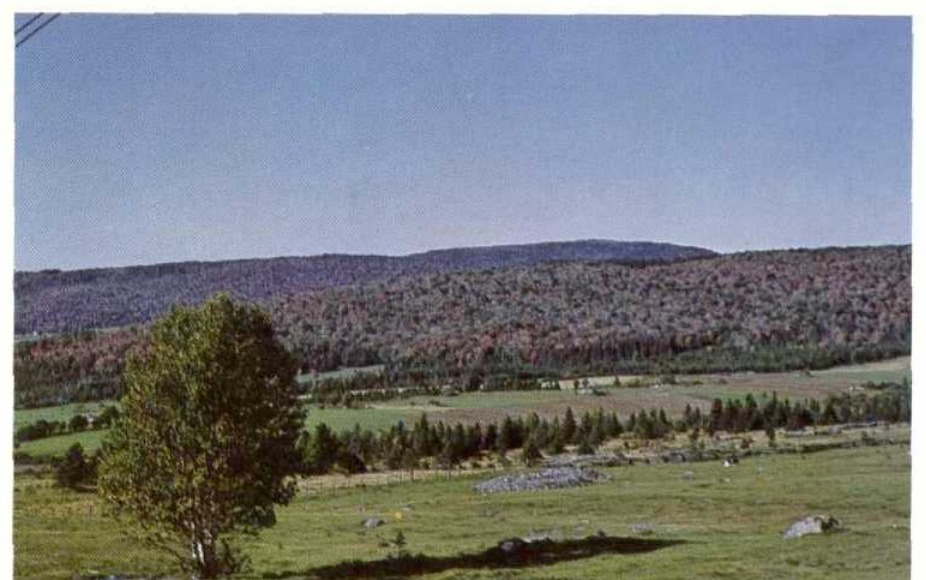
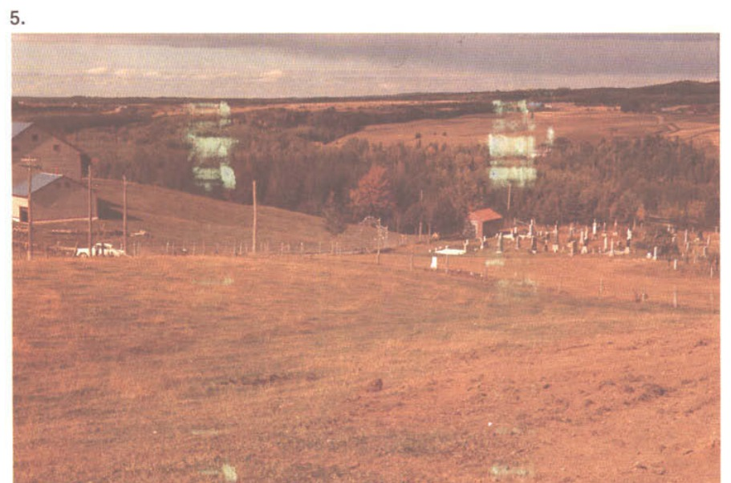
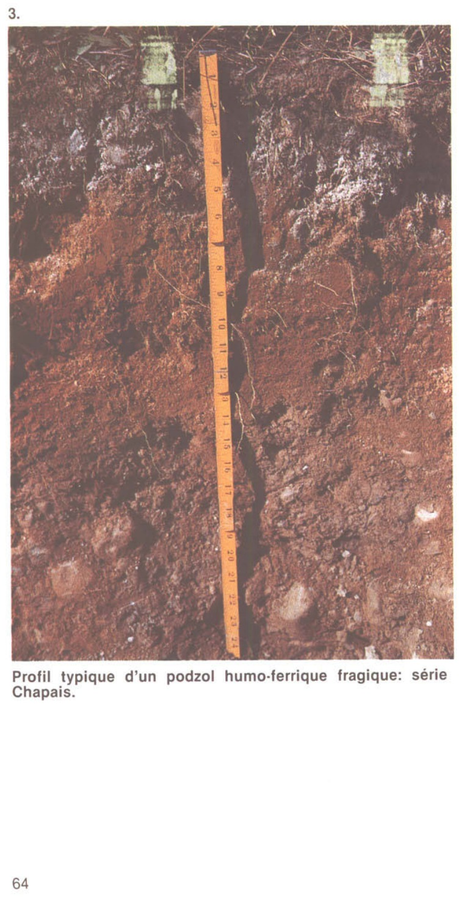
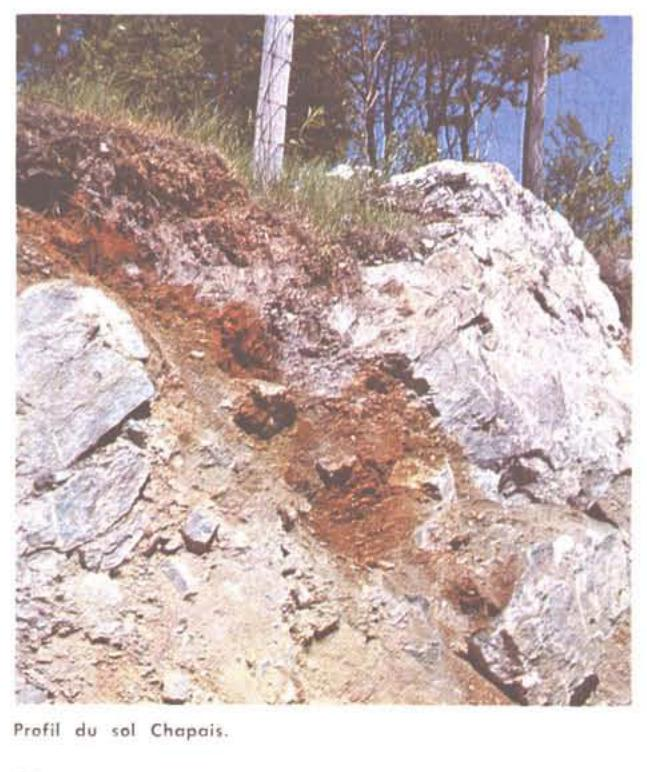

Identification & Caractéristiques Générales
Les sols de la série Chapais se sont développés dans un till morainique basal ou ablatif à texture loameuse, graveleux et caillouteux, dont la lithologie dérive principalement des formations silto-gréseuses et schisteuses des Appalaches, notamment du Supergroupe de Québec et du groupe de Québec (comprenant des schistes ardoisiers verts, rouges et noirs, des microgrès, des grès impurs ainsi que des quartzites blancs). Géomorphologiquement, cette série occupe les sommets et les positions topographiques supérieures des terrains morainiques et des coteaux fortement vallonnés. Le relief est généralement ondulé à fortement vallonné, avec des pentes variant de 2 à 30 %, les pourcentages les plus fréquents s'établissant entre 10 et 15 %, tandis que les sommets bombés présentent parfois des pentes plus douces de 2 à 9 %.
La morphologie du profil pédologique se caractérise par un solum dont la profondeur varie généralement entre 50 et 70 cm au-dessus du matériau meuble ou du roc, définissant à la fois une phase profonde et une phase mince sur roc. L'horizon de surface (Ap), d'une épaisseur moyenne de 21 cm, présente une texture de loam ou de loam limoneux, une structure polyédrique subangulaire fine à moyenne, modérément à fortement développée, ainsi qu'une pierrosité de surface variant de 10 à 20 % en fragments grossiers (graviers et cailloux de grès, de mudrock, de quartzite et de shale). L'horizon sous-jacent (Bf) est un loam friable incorporant de 20 à 40 % de fragments grossiers, surmontant un profil qui manifeste souvent des traits fragiques en profondeur ou un sous-sol plus compact de type till induré. En dépit de cette compacité relative en profondeur, le drainage naturel est classé comme bon en raison de la position surélevée et de la forte pente des sites, la perméabilité modérée du solum assurant un ressuyage adéquat tout en limitant les excès d'eau temporaires. La réaction du sol est généralement acide.
Sur le plan agronomique, la série Chapais offre des aptitudes modérées pour les grandes cultures et les cultures fourragères, bien que la mise en valeur soit restreinte par la pierrosité prononcée, la topographie accidentée et la présence fréquente de pentes fortes induisant des risques d'érosion hydrique lors des labours. Les phases minces, caractérisées par un substratum rocheux peu profond sur les sommets, présentent un potentiel agricole nul et sont généralement maintenues sous couvert forestier ou retirées de la production. Pour les secteurs arables de la phase profonde, la régie culturale exige l'épierrement mécanique régulier, l'implantation de pratiques antiérosives telles que le travail du sol selon les courbes de niveau, ainsi que des apports réguliers d'amendements calciques pour corriger l'acidité naturelle inhérente aux tills appalachiens. Le drainage souterrain artificiel y est rarement requis en raison de la position topographique sommitale et de la bonne déclivité générale.
Caractères Distinctifs & Morphologie Génétique (Comté de Dorchester — Page 59)
- Topographie : fortement vallonné
- Drainage : bon à excessif
- Pierrosité : modérément à excessivement pierreux — 1 et 3
- Grand-groupe génétique : podzol
- Degré d'érosion : léger à modéré (W1— W2)
- Classes d'utilisation : (C) 3F à 5T (Q) 3b à 5f
- Association géographique : Painchaud, Chabot
- Végétation naturelle : sapins, érables, bouleaux, merisiers
Classification Taxonomique & Environnement Pédologique
| Ordre Pédologique | Podzolique |
|---|---|
| Grand Groupe (SCSS) | Podzol humo-ferrique |
| Sous-Groupe Taxonomique | Podzol humo-ferrique fragique |
| Famille Pédologique | Squelettique-loameuse, mixte sableux, acide |
| Mode de Dépôt Parental | Morainique |
| Classe de Drainage Naturel | Bien drainé |
| Régime Thermique & Humidité | Frais / Subhumide |
Description Morphologique du Profil Type
Séquences génétiques des horizons pédologiques caractérisant le profil type représentatif de la série Chapais :
Profil forestier / boisé — Comté de Dorchester
✓ Source : Comté de Dorchester — Page 59Couleur Munsell : 2.5YR 2/2, 2.5R 2/0
Structure & Consistance : Finement granulaire peu développée
Description morphologique : Humus peu minéralisé rouge très sombre (2.5YR 2/2) à noir (2.5R 2/0); structure finement granulaire peu développée; friable; pH : 3.8.
Couleur Munsell : 5YR 7/1, 2.5YR 6/0
Structure & Consistance : Granulaire peu développée
Description morphologique : Loam gris clair (5YR 7/1) à gris (2.5YR 6/0); structure granulaire peu développée; friable; pH : 4.0.
Couleur Munsell : 5YR 4/4, 5YR 3/3
Structure & Consistance : Granulaire
Description morphologique : Loam à loam sableux brun-rouge (5YR 4/4) à brun-rouge foncé (5YR 3/3); structure granulaire; friable; quelques schistes micacés; pH : 4.3.
Couleur Munsell : 10YR 6/4, 10YR 5/6
Structure & Consistance : Finement granulaire
Description morphologique : Loam à loam sableux brun-jaune clair (10YR 6/4) à brun-jaune (10YR 5/6); structure finement granulaire; très friable; quelques schistes micacés; pH : 4.6.
Couleur Munsell : 10YR 5/2, 2.5YR 4/0
Structure & Consistance : Massive
Description morphologique : Loam à loam sableux brun-gris (10YR 5/2) à gris foncé (2.5YR 4/0); structure massive; légèrement compact; de nombreux schistes micacés; pH : 4.9.
Profil naturel (vierge) — Comté de Kamouraska
✓ Source : Comté de Kamouraska — Page 94Couleur Munsell : 2.5Y 3/2
Structure & Consistance : Finement granulaire peu développée
Description morphologique : Mousses, débris de plantes, humus peu minéralisé (type mor), brun gris très foncé (2.5Y 3/2, 2/0 humide), friable; structure finement granulaire peu développée; abrupt, pH 4.3. N.B. Horizon d'humus parfois bien décomposé (Ah).
Couleur Munsell : 5Y 8/1
Structure & Consistance : Granulaire peu développée
Description morphologique : Loam blanc (5Y 8/1, 6/1 humide), très friable; structure granulaire peu développée; abrupt, irrégulier, continu pH 4.0-4.5.
Couleur Munsell : 5YR 4/6, 10YR 5/8
Structure & Consistance : Finement granulaire bien développée
Description morphologique : Loam sableux très fin à loam brun jaune (10YR 5/8, 4/4 humide), très friable; structure finement granulaire bien développée; net, sineux, quelques roches. Horizon parfois surmonté d'un mince horizon (Bh) plus humifère, rouge jaune (5YR 4/6); pH 4.6.
Couleur Munsell : 10YR 6/4
Structure & Consistance : Finement granulaire peu développée
Description morphologique : Loam brun jaune clair (10YR 6/4; 5/4 humide), très friable; structure finement granulaire peu développée; graduel, sinueux, quelques roches: pH 4.9.
Couleur Munsell : 10YR 5/3, 7.5YR 6/0, 10YR 6/6
Structure & Consistance : Massive mais se brise en gros agrégats polyédriques
Description morphologique : Loam de couleurs variées; fond brun à brun foncé (10YR 5/3 à 4/3) avec raies ou traînées grises (7.5YR 6/0 à 7/0) et bandes rouillées (10YR 6/6-6/8); consistance ferme devenant dure à sec; structure massive mais se brise en gros agrégats polyédriques, avec quelques enduits argileux. Note: les sub-horizons éluvial et illuvial (A'e et B't) sont généralement présents tandis que l'horizon induré (à sec) de fragipan est plus ou moins développé.
Couleur Munsell : Non précisée
Structure & Consistance : Polyédrique à granulaire
Description morphologique : Roc constitué de schistes ardoisiers et de grès gris à gris foncé. Quelques fragments rouges et quartz blanc. Les paillettes de schistes ardoisiers sont tendres et se brisent sous la pression des ongles. Le till est généralement mince sur roc (de 2 à 4 pieds). Lorsqu'il est profond, soit de 5 à 6 pieds il devient calcaire ou à haut. pH 7.0 plus.
Profil cultivé (agricole) — Comté de Rimouski
✓ Source : Comté de Rimouski — Page 40Couleur Munsell : 10YR 4/3
Structure & Consistance : Polyédrique subangulaire
Description morphologique : Loam graveleux brun à brun foncé (10YR 4/3); structure polyédrique subangulaire, très fine, faiblement développée; consistance très friable; graviers et cailloux, quartzite et grès; limite abrupte, ondulée; réaction fortement acide.
Couleur Munsell : 10YR 4/4
Structure & Consistance : Polyédrique subangulaire
Description morphologique : Loam graveleux brun-jaune foncé (10YR 4/4); structure polyédrique subangulaire, très fine à fine, faiblement développée; consistance très friable; graviers et cailloux, quartzite et grès; limite nette, ondulée; réaction fortement acide.
Couleur Munsell : 10YR 5/4
Structure & Consistance : Polyédrique subangulaire
Description morphologique : Loam sableux graveleux brun-jaune (10YR 5/4); structure polyédrique subangulaire, très fine, faiblement développée; consistance très friable; graviers et cailloux, quartzite et grès; limite nette, ondulée; réaction fortement acide.
Couleur Munsell : 10YR 4/3
Structure & Consistance : Massive
Description morphologique : Loam très graveleux brun à brun foncé (10YR 4/3); structure massive, consistance ferme, graviers et cailloux, quartzite et grès; limite nette, ondulée; légèrement fragique; réaction fortement acide.
Profil forestier / boisé — Comté de Rivière-du-loup
✓ Source : Comté de Rivière-du-loup — Page 75Couleur Munsell : 10YR 2/3
Structure & Consistance : Polyédrique à granulaire
Description morphologique : Débris de végétaux partiellement décomposés brun très foncé à noirs (10 YR 2/3 s; 2/1 h); pH: 5,0.
Couleur Munsell : 10YR 5/2, 7.5YR 8/2
Structure & Consistance : Granulaire peu développée
Description morphologique : Loam brun-gris (10 YR 5/2 h) à blanc (7.5 YR 8/2 s); structure granulaire peu développée; consistance friable; limite abrupte irrégulière; pH: 4,4.
Couleur Munsell : 10YR 4/4
Structure & Consistance : Granulaire fine bien développée
Description morphologique : Loam brun-jaune foncé à jaune-brun (10 YR 4/4 h; 6/5 s); structure granulaire fine bien développée; consistance friable; limite distincte irrégulière; quelques roches; pH: 4,5.
Couleur Munsell : 2.5Y 4/4
Structure & Consistance : Granulaire fine peu développée
Description morphologique : Loam olive à brun-jaune clair (2.5 Y 4/4 h; 4/4 s); structure granulaire fine peu développée; consistance friable; quelques roches; pH 4,7.
Couleur Munsell : 2.5Y 6/2, 7.5YR 7/0, 2.5Y 6/4
Structure & Consistance : Massive
Description morphologique : Loam pierreux brun-jaune clair (2.5 Y 6/4 à gris-brun clair (2.5 Y 6/2 s); structure massive, compacte, se brisant en agrégats polyédriques irréguliers; quelques enduits argileux et traînées gris clair; (7.5 YR 7/0); pH: 5,2.
Couleur Munsell : Non précisée
Structure & Consistance : Polyédrique à granulaire
Description morphologique : Roc constitué de schistes ardoisiers, de grès gris à gris foncé. Quelques fragments rouges et quartz blanc. Les paillettes de schistes ardoisiers sont tendres et se brisent sous la pression des ongles. Le till est généralement mince sur roc. Lorsqu'il est profond de 1,5 à 2,5 mètres, il devient calcaire ou encore, le pH est supérieur à 7,0.
Profil naturel (vierge) — Comté de Témiscouata
✓ Source : Comté de Témiscouata — Page 22Couleur Munsell : 10YR 3/1, 10YR 4/2
Structure & Consistance : Polyédrique à granulaire
Description morphologique : Horizon organique peu décomposé; gris très foncé (10 YR 3/1 h), brun-gris foncé (10 YR 4/2 s); racines très abondantes, moyennes à grossières; quelques cherts; limite nette, régulière; épaisseur de 4 à 5 cm; très fortement acide.
Couleur Munsell : 10YR 5/2, 10YR 8/2
Structure & Consistance : Faible
Description morphologique : Loam à cherts; brun-gris (10 YR 5/2 h), blanc (10 YR 8/2 s); structure faible, fine, granulaire; consistance peu collante, friable, tendre, peu plastique; racines abondantes, moyennes à fines; cherts; limite abrupte, brisée; épaisseur de 12 à 16 cm; extrêmement acide.
Couleur Munsell : 10YR 4/4, 10YR 6/5
Structure & Consistance : Modérée
Description morphologique : Loam à cherts; brun-jaune foncé (10 YR 4/4 h), brun-jaune clair à jaune-brun (10 YR 6/5 s); structure modérée, fine, granulaire; consistance peu collante, friable, tendre, peu plastique; racines peu abondantes, fines; cherts; limite nette, ondulée; épaisseur de 5 à 8 cm; extrêmement acide.
Couleur Munsell : 5Y 4/4, 5Y 6/4
Structure & Consistance : Faible
Description morphologique : Loam à cherts; olive (2,5 Y 4/4 h), brun-jaune clair (2,5 Y 6/4 s); structure faible, fine, granulaire; consistance peu collante, friable, tendre, peu plastique; cherts; limite graduelle, régulière; épaisseur de 12 à 14 cm; très fortement acide.
Couleur Munsell : 5Y 6/2 (matrice), 5Y 6/4 (marbrures)
Structure & Consistance : Primaire forte
Description morphologique : Loam à cherts; gris-brun clair (2,5 Y 6/2 h), brun-jaune clair (2,5 Y 6/4 s); marbrures nombreuses, fines, faibles; structure primaire forte, très grossière, polyédrique angulaire, et structure secondaire modérée, moyenne, lamellaire; consistance peu collante, ferme, dure, peu plastique; pores très abondants, très fins, verticaux, endo-peds, continus, simples, tubulaires; fentes très abondantes, fines, verticales, exo-peds, continues, simples, interstratitielles; enrobements argileux brun pâle, peu nombreux, minces à très minces, dans les fentes interstratitielles des polyèdres, et enrobements argileux brun pâle, communs, minces à très minces, dans les vides et/ou les lacunes tubulaires; cherts, cailloux anguleux; limite diffuse dans les tills très profonds (plus de 130 cm)); fortement acide.
Couleur Munsell : Non précisée
Structure & Consistance : Polyédrique à granulaire
Description morphologique : Roc constitué de grès gris à gris foncé, de schistes ardoisiers, de quelques schistes brun-rouge et de quartz blanc.
Profil forestier / boisé — Comté de Bellechasse — Phase mince
✓ Source : Comté de Bellechasse — Page 50Couleur Munsell : 2.5YR 3/2
Structure & Consistance : Granulaire peu développée
Description morphologique : Humus généralement peu minéralisé, brun gris très foncé (2.5YR 3/2); structure granulaire peu développée; pH 4.3.
Couleur Munsell : 10YR 7/1
Structure & Consistance : Granulaire peu développée
Description morphologique : Loam à loam sableux gris clair (10YR 7/1); structure granulaire peu développée; limites irrégulières; friable et perméable; pH 4.4.
Couleur Munsell : 10YR 5/8
Structure & Consistance : Granulaire bien développée
Description morphologique : Loam sableux brun jaune (10YR 5/8); structure granulaire bien développée; limites irrégulières; quelques pierres; friable et perméable; pH 4.6.
Couleur Munsell : 10YR 6/4
Structure & Consistance : Granulaire peu développée
Description morphologique : Loam brun jaune clair (10YR 6/4); structure granulaire peu développée; limites irrégulières; quelques pierres; friable et perméable; pH 4.9.
Couleur Munsell : Non précisée
Structure & Consistance : Massive
Description morphologique : Loam pierreux de couleur brune, jaune et grise; structure massive; compact mais s'effrite en blocs grossièrement polyédriques; imperméable; pH 5.2. Lorsque le sol est profond, il fait généralement effervescence.
Profils Photographiques & Planches de Terrain
Documents iconographiques, figures pédologiques et coupes de terrain documentées dans les mémoires d'inventaire pour de la série Chapais :





Propriétés Physico-Chimiques & Analyses de Laboratoire
| Horizon | Prof. limite | pH (H₂O) | M.O. % | C tot. % | N tot. % | C.E.C. (cmol/kg) | Sable % | Limon % | Argile % | P Meh3 (mg/kg) | K (cmol/kg) | Ca (cmol/kg) | MVA (g/cm³) |
|---|---|---|---|---|---|---|---|---|---|---|---|---|---|
| Ap1 | 10.0 cm | 5.93 | 7.4 | 4.29 | 0.35 | 24.0 | 42.3 | 34.7 | 23.1 | 27.5 | 0.25 | 9.84 | 1.06 |
| Ap2 | 22.0 cm | 5.72 | 5.75 | 3.34 | 0.26 | 20.8 | 45.1 | 33.1 | 21.8 | 28.2 | 0.13 | 6.26 | 1.13 |
| B | — | 5.76 | 3.98 | 2.31 | 0.17 | 18.1 | 47.5 | 29.9 | 22.6 | 13.8 | 0.09 | 4.37 | 1.24 |
Particularités Régionales, Phases & Variantes Pédologiques
Déclinaisons régionales, faciès texturaux, phases d'érosion ou de pierrosité et variantes cartographiées par étude pour de la série Chapais :
| Étude Régionale | Symbole | Appellation / Phase / Variante | Différenciation avec la série type (Analyse pédologique) |
|---|---|---|---|
| Comté de Bellechasse | Ch |
Chapais loam sableux pierreux | Modalité modale de référence (type de base de la série). |
Ch-m |
Chapais loam sableux pierreux mince | Phase pierreuse; Phase mince sur substrat rocheux (< 50 cm). | |
| Comté de Dorchester | Ch |
Chapais loam pierreux | Phase pierreuse; Faciès loameux plus fin et équilibré que le loam sableux de référence (meilleure rétention en eau et nutriments). |
Ch-m |
Chapais loam pierreux mince | Phase pierreuse; Phase mince sur substrat rocheux (< 50 cm); Faciès loameux plus fin et équilibré que le loam sableux de référence (meilleure rétention en eau et nutriments). | |
| Comté de Kamouraska | Ch |
Chapais loam sableux fin pierreux | Phase pierreuse. |
Ch-m |
Chapais loam sableux fin pierreux phase mince | Phase pierreuse; Phase mince sur substrat rocheux (< 50 cm). | |
| Comté de Matane | CH3-cd |
Chapais loam à loam limoneux souvent graveleux pente de 3-9% | Phase graveleuse à perméabilité accrue et réserve utile diminuée; Phase de pente (3-9%) avec risque de ruissellement et d'érosion hydrique accrue; Faciès plus limoneux (loam limoneux), offrant une forte rétention en eau mais vulnérable à la battance. |
CH3-d |
Chapais loam à loam limoneux souvent graveleux pente de 6-9% | Phase graveleuse à perméabilité accrue et réserve utile diminuée; Phase de pente (6-9%) avec risque de ruissellement et d'érosion hydrique accrue; Faciès plus limoneux (loam limoneux), offrant une forte rétention en eau mais vulnérable à la battance. | |
CH3-de |
Chapais loam à loam limoneux souvent graveleux pente de 6-15% | Phase graveleuse à perméabilité accrue et réserve utile diminuée; Phase de pente (6-15%) avec risque de ruissellement et d'érosion hydrique accrue; Faciès plus limoneux (loam limoneux), offrant une forte rétention en eau mais vulnérable à la battance. | |
| Comté de Rimouski | CH3 |
Chapais loam graveleux | Phase graveleuse à perméabilité accrue et réserve utile diminuée; Faciès loameux plus fin et équilibré que le loam sableux de référence (meilleure rétention en eau et nutriments). |
| Comté de Rivière-du-loup | Ch |
Chapais loam sableux fin pierreux | Phase pierreuse. |
Ch-m |
Chapais loam sableux fin pierreux phase mince | Phase pierreuse; Phase mince sur substrat rocheux (< 50 cm). | |
| Comté de Témiscouata | Ch |
Chapais loam à loam sableux fin pierreux et caillouteux à cherts | Phase pierreuse. |
Ch-m |
Chapais loam à loam sableux fin pierreux et caillouteux à cherts phase mince | Phase pierreuse; Phase mince sur substrat rocheux (< 50 cm). |
Distribution Pédo-Paysagère & Représentativité Cartographique (Couverture PPS 2026)
- Painchaud loam pierreux (PHU) — co-occurrente dans 1313 polygone(s)
- Chabot loam pierreux (CHB) — co-occurrente dans 223 polygone(s)
- Affleurements rocheux (ARR) — co-occurrente dans 170 polygone(s)
Aptitudes Agronomiques, Hydropédologie & Conservation des Sols
Indicateurs Hydropédologiques & Vulnérabilité à l'Érosion (BDHP 2026)
Interprétation BDHP : Potentiel de ruissellement modérément élevé. Faible taux d'infiltration, présence d'horizons ralentissant le drainage descendant.
Classement selon l'Inventaire des Terres du Canada (ITC / CLI) : Classe 1.
- Potentiel agricole : Terroir adapté aux cultures régionales selon la texture dominante et la régie de drainage.
- Contraintes majeures : Bien drainé. Risque d'engorgement temporaire ou d'excès d'eau printanier.
- Gestion & Aménagement : Drainage souterrain ou superficiel préconisé sur les terres planes. Chaulage et apport organique régulier selon les bilans agronomiques.
- Cultures adaptées : Grandes cultures (maïs, soya, céréales), prairies fourragères et cultures maraîchères selon le contexte géomorphologique.